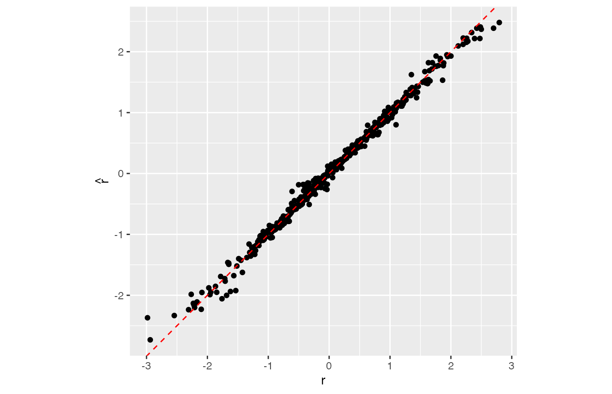

Correlated predictors disrupt importance
correlation.Rmd
library(randomForest)
#> randomForest 4.6-14
#> Type rfNews() to see new features/changes/bug fixes.
library(ggplot2)
#>
#> Attaching package: 'ggplot2'
#> The following object is masked from 'package:randomForest':
#>
#> margin
library(caret)
#> Loading required package: lattice
library(spuriousimportance)Overview of our example dataset
Let’s start with generating a dataset named ds.
set.seed(17)
ds <- generate_dataset()Among five predictor variables v, w, x, y, and z in the dataset, the first two are the most important for the regression of a response variable r, as the following correlation matrix shows.
graphics::pairs(r ~ v + w + x + y + z, data = ds)Training a model that works as expected
First, we train a random forest for the regression of r.
rf <- randomForest(r ~ v + w + x + y + z, data = ds, mtry = 2, ntree = 50, importance = TRUE)The following code illustrates how well the trained model performs the regression for a new dataset. Its accuracy turns out to be satisfactory although we omit to present any measurement of the accuracy.
validate_regression <- function(rf) {
newds <- generate_dataset()
newres <- predict(rf, newdata = newds)
ggplot(data.frame(x = newds$r, y = newres)) +
geom_point(aes(x, y)) +
geom_abline(intercept = 0, slope = 1, colour = "red", linetype = "dashed") +
coord_fixed() +
xlab("r") +
ylab(expression(hat(r)))
}
validate_regression(rf)randomForest::importance() extracts the importance matrix of predictors from a given random forest. Note that the function can calculate different measures of importance, depending on argument type. Calling it with type = 1 returns a permutation importance using the mean squared error (MSE) for each tree.
importance(rf, type = 1)
#> %IncMSE
#> v 11.0877780
#> w 9.1825884
#> x 11.7523414
#> y 0.8433381
#> z -0.8506021By default the permutation importance is normalized to be so-called a z-score. On the other hand, if another parameter scale = FALSE is passed, we get a raw (unscaled) importance as follows.
importance(rf, type = 1, scale = FALSE)
#> %IncMSE
#> v 0.979730519
#> w 0.730911604
#> x 0.049559999
#> y 0.002118336
#> z -0.001899118Calling the function with type = 2 returns another type of importance defined with a mean decrease in node impurity, which is measured by the residual sum of squares (RSS) for regressors.
importance(rf, type = 2)
#> IncNodePurity
#> v 307.818564
#> w 229.955117
#> x 22.125648
#> y 4.711215
#> z 7.412531For a regression with a reduced set of predictors
Here we will see what happens when excluding unimportant variables y and z from the set of predictors.
ds1 <- generate_dataset()
rf1 <- randomForest(r ~ v + w + x, data = ds1, mtry = 2, ntree = 50, importance = TRUE)
validate_regression(rf1)
Now the resulting importance of x, computed by permutating OOB data, is higher than that of v or w as follows.
importance(rf1, type = 1)
#> %IncMSE
#> v 10.720305
#> w 8.567586
#> x 52.922063Nevertheless the unscaled permutation importance does not suffer the bias.
importance(rf1, type = 1, scale = FALSE)
#> %IncMSE
#> v 0.84916419
#> w 0.62726654
#> x 0.05182589The importance measured by the node impurity is also as expected.
importance(rf1, type = 2)
#> IncNodePurity
#> v 282.9347
#> w 215.9355
#> x 12.4550For a binary classification defined by ranks
Next, we will train a random forest for the binary classification of a response variable s, which divides the rows of a generated dataset into two groups, “A” and “B”, of equal numbers, using r’s median as a cut-off.
ds2 <- generate_dataset()
rf2 <- randomForest(s ~ v + w + x + y + z, data = ds2, mtry = 2, ntree = 50, importance = TRUE)The classification performed by the obtained model is of high accuracy, as follows.
validate_classification <- function(rf) {
newds <- generate_dataset()
newres <- predict(rf, newdata = newds)
confusionMatrix(newres, newds$s)
}
validate_classification(rf2)
#> Confusion Matrix and Statistics
#>
#> Reference
#> Prediction A B
#> A 246 5
#> B 4 245
#>
#> Accuracy : 0.982
#> 95% CI : (0.9661, 0.9917)
#> No Information Rate : 0.5
#> P-Value [Acc > NIR] : <2e-16
#>
#> Kappa : 0.964
#>
#> Mcnemar's Test P-Value : 1
#>
#> Sensitivity : 0.9840
#> Specificity : 0.9800
#> Pos Pred Value : 0.9801
#> Neg Pred Value : 0.9839
#> Prevalence : 0.5000
#> Detection Rate : 0.4920
#> Detection Prevalence : 0.5020
#> Balanced Accuracy : 0.9820
#>
#> 'Positive' Class : A
#> However x’s importance, computed from permutating OOB data, is higher than v’s or w’s, again.
importance(rf2, type = 1)
#> MeanDecreaseAccuracy
#> v 11.146407
#> w 11.432070
#> x 16.785657
#> y 1.407842
#> z 1.534501Yet, such reversal does not occur with the raw permutation importance
importance(rf2, type = 1, scale = FALSE)
#> MeanDecreaseAccuracy
#> v 0.214378239
#> w 0.233186183
#> x 0.054300801
#> y 0.002153339
#> z 0.001762533… nor with the one measured by the node impurity.
importance(rf2, type = 2)
#> MeanDecreaseGini
#> v 111.562181
#> w 100.786000
#> x 27.847465
#> y 5.458803
#> z 3.892912Conclusion
The core of our trick to disrupt importance in this vignette is to include two correlated predictors, v and w. They are collinear in fact. For your information, [1] explains the same issue of collinearity in predictors, as well as how to deal with it.
Our examples show that high accuracy of the regression or classification performed by a trained model does not imply that the resulting importance is correct. They also indicate that the unscaled permutation importance behaves more preferably than the scaled does, which agrees with the statements found in [2] and [3].
References
[1] scikit-learn developers. Permutation Importance with Multicollinear or Correlated Features. https://scikit-learn.org/stable/auto_examples/inspection/plot_permutation_importance_multicollinear.html
[2] Strobl, C., Boulesteix, AL., Kneib, T. et al. Conditional variable importance for random forests. BMC Bioinformatics 9, 307 (2008). https://doi.org/10.1186/1471-2105-9-307
[3] Parr, T. et al. Beware Default Random Forest Importances. https://explained.ai/rf-importance/index.html